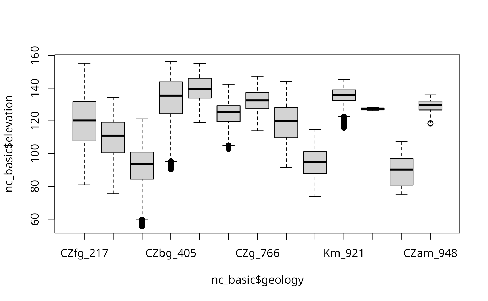

readRAST.RdRead GRASS raster files from GRASS into R terra "SpatRaster" or sp "SpatialGridDataFrame" objects, and write single columns of terra "SpatRaster" or sp "SpatialGridDataFrame" objects to GRASS. When return_format="terra", temporary binary files and r.out.bin and r.in.bin are used for speed reasons. read_RAST() and write_RAST() by default use "RRASTER" files written and read by GDAL.
read_RAST(vname, cat=NULL, NODATA=NULL, ignore.stderr=get.ignore.stderrOption(),
return_format="terra", close_OK=return_format=="SGDF", flags=NULL)
write_RAST(x, vname, zcol = 1, NODATA=NULL, flags=NULL,
ignore.stderr = get.ignore.stderrOption(), overwrite=FALSE, verbose=TRUE)A vector of GRASS raster file names in mapsets in the current search path, as set by “g.mapsets”; the file names may be given as fully-qualified map names using “name@mapset”, in which case only the mapset given in the full path will be searched for the existence of the raster; if more than one raster with the same name is found in mapsets in the current search path, an error will occur, in which case the user should give the fully-qualified map name. If the fully-qualified name is used, @ will be replaced by underscore in the output object.
default NULL; if not NULL, must be a logical vector matching vname, stating which (CELL) rasters to return as factor
default "terra", optionally "SGDF"
default taking the value set by set.ignore.stderrOption; can be set to TRUE to silence system() output to standard error; does not apply on Windows platforms
default TRUE - clean up possible open connections used for reading metadata; may be set to FALSE to avoid the side-effect of other user-opened connections being broken
A terra "SpatRaster" or sp "SpatialGridDataFrame" object
Attribute column number or name
by default NULL, in which case it is set to one less than floor() of the data values for FCELL rasters or the range maximum for CELL Byte, UInt16 and Uint32 rasters (with no negative values), and an attempt is made to set NODATA to the upper Int16 and Int32 range if the lower range is occupied; otherwise an integer NODATA value (required to be integer by GRASS r.out.bin)
default FALSE, if TRUE inserts "overwrite" into the value of the flags argument if not already there to allow existing GRASS rasters to be overwritten
default NULL, character vector, for example "overwrite"
default TRUE, report how writing to GRASS is specified
read_RAST by default returns a SpatRaster object, but may return a legacy SpatialGridDataFrame object if return_format="SGDF". write_RAST silently returns the object being written to GRASS.
run <- FALSE
if (nchar(Sys.getenv("GISRC")) > 0 &&
read.dcf(Sys.getenv("GISRC"))[1,"LOCATION_NAME"] == "nc_basic_spm_grass7") run <- TRUE
GV <- Sys.getenv("GRASS_VERBOSE")
Sys.setenv("GRASS_VERBOSE"=0)
ois <- get.ignore.stderrOption()
set.ignore.stderrOption(TRUE)
#> [1] FALSE
if (run) {
unlist(strsplit(execGRASS("g.mapsets", flags="p", intern=TRUE), " "))
}
#> [1] "rsb" "PERMANENT"
if (run) {
execGRASS("g.list", type="raster", pattern="soils", flags="m", intern=TRUE)
}
#> [1] "soils@PERMANENT"
if (run) {
execGRASS("g.list", type="raster", pattern="soils@PERMANENT", mapset=".", flags="m", intern=TRUE)
}
#> character(0)
if (run) {
execGRASS("g.list", type="raster", pattern="soils", mapset="PERMANENT", flags="m", intern=TRUE)
}
#> [1] "soils@PERMANENT"
run <- run && require("terra", quietly=TRUE)
#> terra 1.7.65
if (run) {
v1 <- read_RAST("landuse", cat=TRUE, return_format="terra")
v1
inMemory(v1)
}
#> [1] FALSE
if (run) {
write_RAST(v1, "landuse1", flags=c("o", "overwrite"))
execGRASS("r.stats", flags="c", input="landuse1")
execGRASS("g.remove", flags="f", name="landuse1", type="raster")
}
#> SpatRaster read into GRASS using r.in.gdal from file
#> 1 592288
#> 2 17347
#> 3 206129
#> 4 135994
#> 5 1021725
#> 6 42854
#> 7 1610
#> * 7053
Sys.setenv("_SP_EVOLUTION_STATUS_"="2")
run <- run && require("sp", quietly=TRUE)
if (run) {
nc_basic <- read_RAST(c("geology", "elevation"), cat=c(TRUE, FALSE),
return_format="SGDF")
print(table(nc_basic$geology))
}
#> Warning: non-unique category labels; category number appended
#>
#> CZfg_217 CZlg_262 CZig_270 CZbg_405 CZve_583 CZam_720 CZg_766 CZam_862
#> 725562 198684 689373 253710 21609 4824 7074 61722
#> CZbg_910 Km_921 CZbg_945 CZam_946 CZam_948
#> 44964 12528 9 4068 873
if (run) {
execGRASS("r.stats", flags=c("c", "l", "quiet"), input="geology")
}
#> 217 CZfg 725562
#> 262 CZlg 198684
#> 270 CZig 689373
#> 405 CZbg 253710
#> 583 CZve 21609
#> 720 CZam 4824
#> 766 CZg 7074
#> 862 CZam 61722
#> 910 CZbg 44964
#> 921 Km 12528
#> 945 CZbg 9
#> 946 CZam 4068
#> 948 CZam 873
if (run) {
boxplot(nc_basic$elevation ~ nc_basic$geology)
}

if (run) {
nc_basic$sqdem <- sqrt(nc_basic$elevation)
}
if (run) {
write_RAST(nc_basic, "sqdemSP", zcol="sqdem", flags=c("quiet", "overwrite"))
execGRASS("r.info", map="sqdemSP")
}
#> SpatialGridDataFrame read into GRASS using r.in.bin
#> +----------------------------------------------------------------------------+
#> | Map: sqdemSP Date: Tue Jan 23 16:37:46 2024 |
#> | Mapset: rsb Login of Creator: rsb |
#> | Location: nc_basic_spm_grass7 |
#> | DataBase: /home/rsb/topics/grassdata |
#> | Title: |
#> | Timestamp: none |
#> |----------------------------------------------------------------------------|
#> | |
#> | Type of Map: raster Number of Categories: 0 |
#> | Data Type: DCELL Semantic label: (none) |
#> | Rows: 1350 |
#> | Columns: 1500 |
#> | Total Cells: 2025000 |
#> | Projection: Lambert Conformal Conic |
#> | N: 228500 S: 215000 Res: 10 |
#> | E: 645000 W: 630000 Res: 10 |
#> | Range of data: min = 7.45511854848878 max = 12.5031941719687 |
#> | |
#> | Data Description: |
#> | generated by r.in.bin |
#> | |
#> | Comments: |
#> | r.in.bin --overwrite --quiet -d input="/home/rsb/topics/grassdata/nc\ |
#> | _basic_spm_grass7/rsb/.tmp/localhost.localdomain/X834" output="sqdem\ |
#> | SP" bytes=8 header=0 bands=1 order="native" north=228500 south=21500\ |
#> | 0 east=645000 west=630000 rows=1350 cols=1500 anull=6 |
#> | |
#> +----------------------------------------------------------------------------+
#>
if (run) {
print(system.time(sqdemSP <- read_RAST(c("sqdemSP", "elevation"),
return_format="SGDF")))
}
#> user system elapsed
#> 0.642 0.146 0.793
if (run) {
print(system.time(sqdem <- read_RAST(c("sqdemSP", "elevation"),
return_format="terra")))
}
#> user system elapsed
#> 0.591 0.111 0.707
if (run) {
names(sqdem)
}
#> [1] "sqdemSP" "elevation"
if (run) {
try(sqdem1 <- read_RAST(c("sqdemSP@rsb", "elevation@PERMANENT")))
}
if (run) {
names(sqdem1)
}
#> [1] "sqdemSP_rsb" "elevation_PERMANENT"
if (run) {
execGRASS("g.remove", flags="f", name="sqdemSP", type="raster")
execGRASS("r.mapcalc", expression="basins0 = basins - 1", flags="overwrite")
execGRASS("r.stats", flags="c", input="basins0")
}
#> 1 116975
#> 3 75480
#> 5 1137
#> 7 80506
#> 9 7472
#> 11 348209
#> 13 51456
#> 15 81959
#> 17 29652
#> 19 267883
#> 21 89465
#> 23 63433
#> 25 91354
#> 27 190239
#> 29 59727
#> * 470053
if (run) {
basins0 <- read_RAST("basins0", return_format="SGDF")
print(table(basins0$basins0))
}
#>
#> 1 3 5 7 9 11 13 15 17 19 21
#> 116975 75480 1137 80506 7472 348209 51456 81959 29652 267883 89465
#> 23 25 27 29
#> 63433 91354 190239 59727
if (run) {
execGRASS("g.remove", flags="f", name="basins0", type="raster")
}
if (run) {
execGRASS(cmd = "r.mapcalc", expression="test_t=66000", flags="overwrite")
execGRASS("r.info", flags = "r", map = "test_t", intern = TRUE) # #82
}
#> [1] "min=66000" "max=66000"
if (run) {
(tt = read_RAST(vname = "test_t"))
}
#> WARNING: Too many values, color table cut to 65535 entries
#> class : SpatRaster
#> dimensions : 1350, 1500, 1 (nrow, ncol, nlyr)
#> resolution : 10, 10 (x, y)
#> extent : 630000, 645000, 215000, 228500 (xmin, xmax, ymin, ymax)
#> coord. ref. : NAD83(HARN) / North Carolina (EPSG:3358)
#> source : file7e46249550b2e.grd
#> name : file7e46249550b2e
#> min value : 0
#> max value : 66000
if (run) {
execGRASS("g.remove", flags="f", name="test_t", type="raster")
}
Sys.setenv("GRASS_VERBOSE"=GV)
set.ignore.stderrOption(ois)
#> [1] TRUE